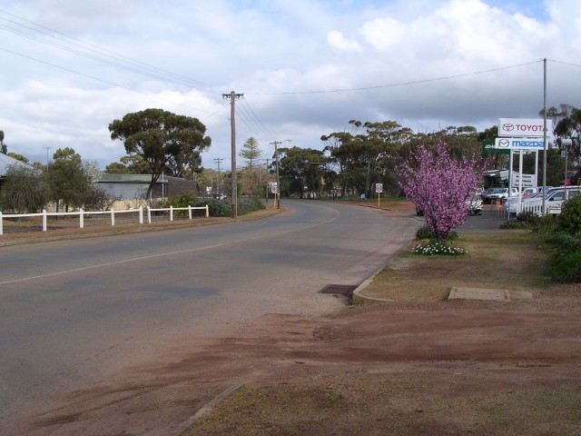
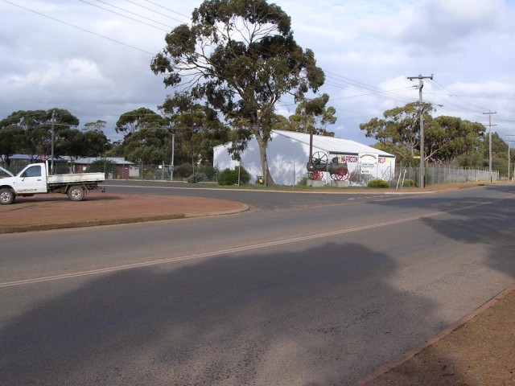
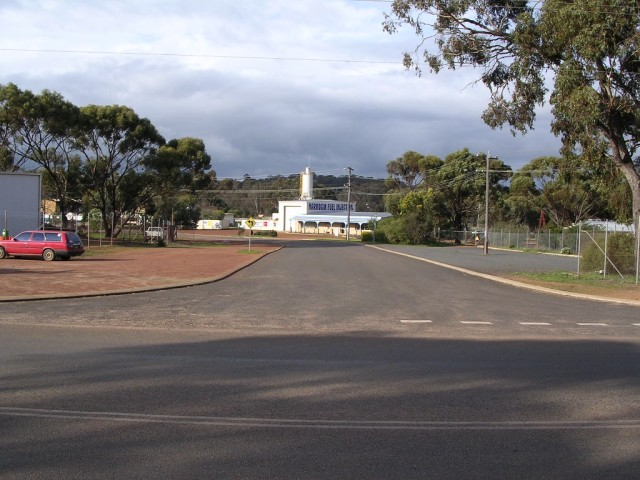
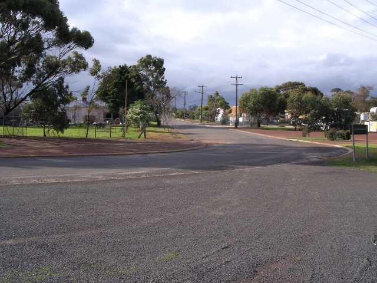
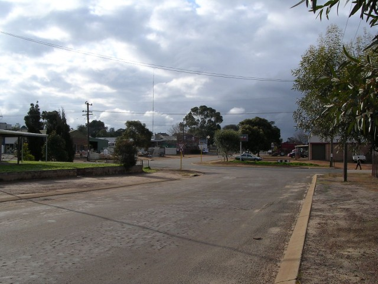
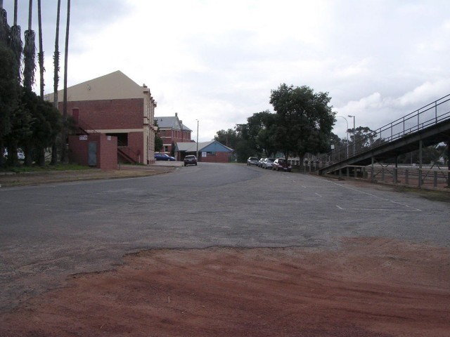
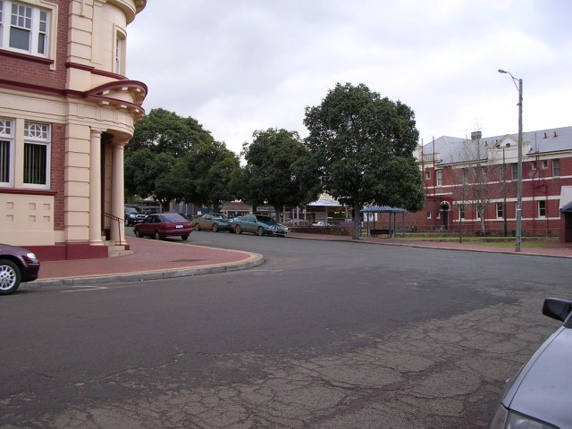

Numbers on the map represent the location where the photographs were taken. Scroll down to view the photographs.
Narrogin (GP Variant) - Federal Street and Fairway Street
|| Contents || Clayton / Lefroy / Lock | Jersey / Glyde / Forrest | Federal / Fairway | Federal || Home ||
Numbers on the map represent the location where the photographs were taken. Scroll
down to view the photographs.
Return to racingcircuits.net's Photo Archive Main Index

17 - Left sweep on Federal Street.

18 - Left turn into Fairway Street. This section has been
realigned since the circuit was used.

19 - Start of Fairway Street.

20 - Fairway Street.

21 - Fairway Street junction with Furnival Street.

22 - Approaching kink on Fairway Street.

23 - First part of the double-left at the end of Fairway Street.

24 - Final part of the double-left on Fairway Street.
Photographs and Text ©Neil Fackerell. Reproduced here with kind permission.